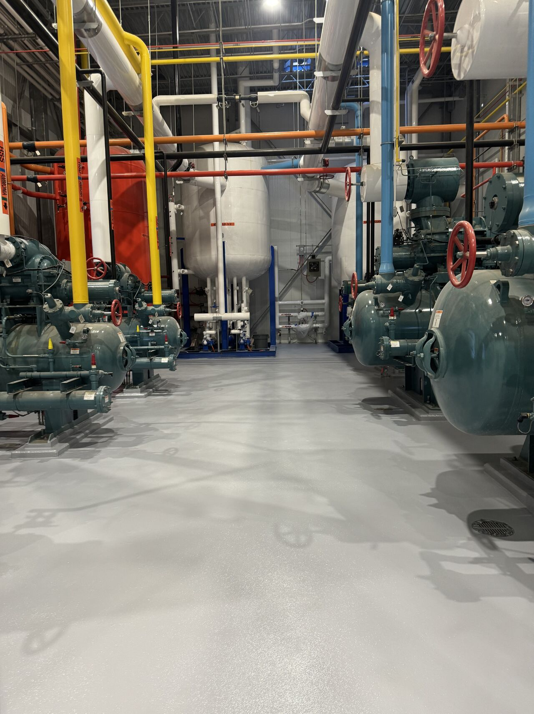
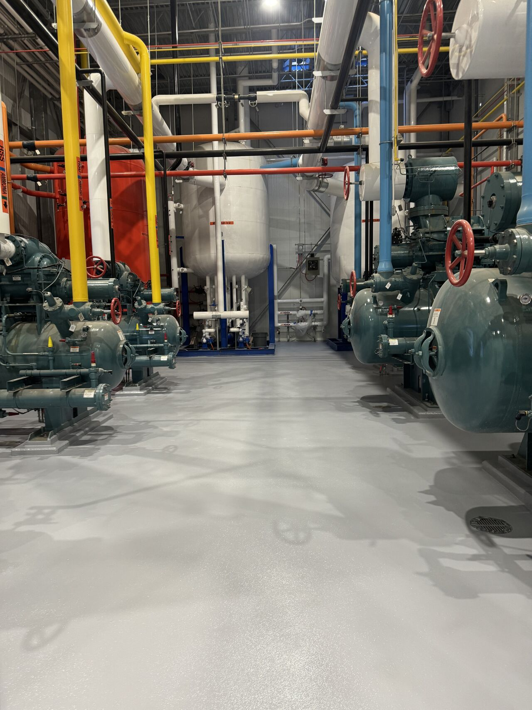

We went back to a poultry processing facility we did over a year ago to check on the engine room floor. The result? Zero standing water. Zero floor failures. Over a year of heavy use, and it still looks nearly identical to day one.
The Problem: Persistent Standing Water
The engine room had persistent standing water and drainage issues throughout. Water was pooling across the floor, creating safety hazards, accelerating equipment corrosion, and making the space impossible to keep sanitary. The existing bare concrete had no slope to drain and no protection against the constant moisture.
The Solution
Our crew tackled this one from the ground up:
- Dual water testing — identified exactly where drainage was failing
- Surface scarification — prepared the substrate for proper adhesion
- SaniBulk polymer concrete — rebuilt the slope to eliminate standing water and direct flow to drains
- SaniCrete STX — 3/8" stainless steel reinforced cementitious urethane
- SaniCrete VR cant cove — seamless wall-to-floor transitions
- SaniCoat 200 epoxy topcoat — non-slip texture for safe footing in a wet environment
One Year Later: The Results
 

Over a year of daily operation in a poultry processing environment, and the floor is performing exactly as it should. After a full washdown, water drains cleanly with zero pooling — exactly how we designed it. No cracks, no delamination, no failures.
This is why we offer a 5-year no-hassle warranty on our systems. We build floors that last, and we stand behind them. That kind of durability is what keeps clients coming back.
Products Used
- SaniCrete STX — 3/8" stainless steel reinforced cementitious urethane
- SaniCrete VR — Vertical and cove base curbing system
- SaniCoat 200 — Epoxy topcoat with non-slip texture